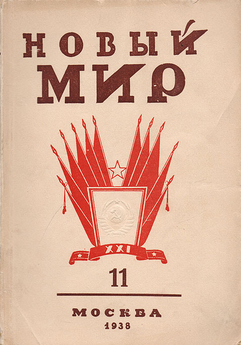
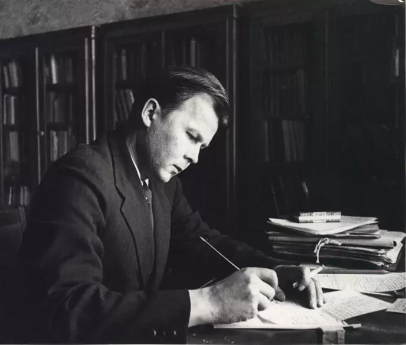

«Новый мир» под руководством Твардовского
📜 «Новый мир» как явление
Литературно-художественный журнал «Новый мир» основан в 1925 году. Однако подлинный расцвет издания связан с именем Александра Трифоновича Твардовского, который дважды занимал пост главного редактора: с 1950 по 1954 год и с 1958 по 1970 год. Именно второй период (1958–1970) вошёл в историю как «золотой век» «Нового мира» и как целая эпоха в истории русской литературы.
При Твардовском журнал стал не просто литературным изданием, а центром общественно-политической жизни страны, главной трибуной «шестидесятников». Здесь печаталась честная, правдивая литература, которую не решались публиковать другие журналы. По словам исследователей, «Новый мир» Твардовского был «самым последовательным проводником политики десталинизации» в литературе и оставался оппозиционным власти даже в годы брежневского «застоя».
Твардовский собрал вокруг себя команду единомышленников — критиков и редакторов, которые разделяли его взгляды: Анатолий Кондратович, Владимир Лакшин, Илья Сац, Борис Закс. Вместе они превратили «Новый мир» в явление, которое современники называли «островом свободы» в советском литературном море.
📚 Главные публикации эпохи
Александр Солженицын
В ноябре 1962 года в «Новом мире» была опубликована повесть «Один день Ивана Денисовича». Это было первое художественное произведение о сталинских лагерях, вышедшее в СССР. Твардовский лично добивался разрешения на публикацию у Никиты Хрущёва, понимая историческое значение этого текста. Публикация стала сенсацией не только в СССР, но и во всём мире. Позже журнал напечатал рассказы Солженицына «Матрёнин двор» и «Случай на станции Кочетовка». Однако роман «В круге первом» и «Раковый корпус» напечатать не удалось — цензура запретила.
Василий Гроссман
Роман-эпопея «Жизнь и судьба» был передан в редакцию в 1961 году. Твардовский назвал его «военным "Войной и миром"» и отстаивал до последнего. Но в 1961 году рукопись была арестована КГБ, и публикация не состоялась. Твардовский тяжело переживал эту потерю. Роман увидел свет только в 1980-е годы за рубежом, а в СССР — в конце 1980-х.
Поэты-«шестидесятники»
Андрей Вознесенский, Белла Ахмадулина, Евгений Евтушенко, Роберт Рождественский, Борис Слуцкий, Давид Самойлов — именно «Новый мир» открыл их для широкой аудитории. Твардовский печатал их стихи, несмотря на нападки консервативной критики, которая обвиняла «шестидесятников» в «формализме» и «нигилизме».
Прозаики нового поколения
Василий Шукшин — рассказы «Чудик», «Срезал», «Микроскоп» — Твардовский разглядел в сибирском актёре и режиссёре огромный литературный талант. Юрий Трифонов — повесть «Обмен», открывшая цикл «московских повестей» о советской интеллигенции. Фазиль Искандер, Владимир Войнович, Григорий Бакланов (повесть «Навеки — девятнадцатилетние») — все они начинали свой путь в литературе в «Новом мире».
Возвращённые имена
Твардовский печатал стихи Бориса Пастернака (из романа «Доктор Живаго»), Анны Ахматовой («Поэма без героя»), Марины Цветаевой (посмертно), Николая Заболоцкого. Он вернул в литературу имена, которые долгие годы находились в тени официальной критики.
⚔️ Борьба с цензурой и травля журнала
Твардовский вёл непримиримую борьбу с партийной бюрократией и цензурой. Он отказывался печатать «идеологически выдержанные» конъюнктурные произведения, отстаивал каждую публикацию, вступал в конфликты с членами редколлегии и лично с секретарём Союза писателей Александром Фадеевым, а позже — с партийными идеологами Михаилом Сусловым и Дмитрием Полянским.
После смещения Хрущёва в 1964 году и наступления брежневской «эпохи застоя» давление на журнал усилилось. В 1969–1970 годах в партийной печати (в частности, в журнале «Октябрь», который возглавлял консерватор Всеволод Кочетов) развернулась травля «Нового мира». Твардовского обвиняли в «идейной невыдержанности», «публикации клеветнических произведений», «нигилистическом отношении к советской литературе».
В феврале 1970 года Твардовский был вынужден покинуть пост главного редактора. Вместе с ним ушла вся его команда: А. Кондратович, В. Лакшин, И. Сац, Б. Закс и другие. Это стало концом целой эпохи в истории русской литературы и журналистики. «Новый мир» превратился в рядовое советское издание.
🌟 Значение в истории литературы
«Новый мир» времён Твардовского — это голос поколения «шестидесятников», трибуна для писателей, говоривших правду о сталинизме, о войне, о советской действительности. Журнал формировал мировоззрение целой интеллигентской прослойки, которая в 1980-е годы сыграла существенную роль в перестройке и обновлении страны.
Современники называли «Новый мир» «главной книгой эпохи». Именно здесь впервые были напечатаны произведения, которые позже составили золотой фонд русской литературы XX века. Без «Нового мира» Твардовского не было бы ни «оттепели» в литературе, ни того мощного общественного резонанса, который привёл к переосмыслению сталинизма.
История «Нового мира» и его главного редактора — это история мужества и принципиальности в литературе. Твардовский заплатил за свои убеждения должностью, здоровьем, но не отказался от них. Как писал в своих дневниках сам поэт: «Назначение художника — служить правде. А правда всегда сложнее любой схемы. Потому и искусство — вечное искание, вечное горение».

📖 Обложка журнала «Новый мир», 1960-е годы

✍️ Александр Твардовский в редакции журнала, 1960-е годы